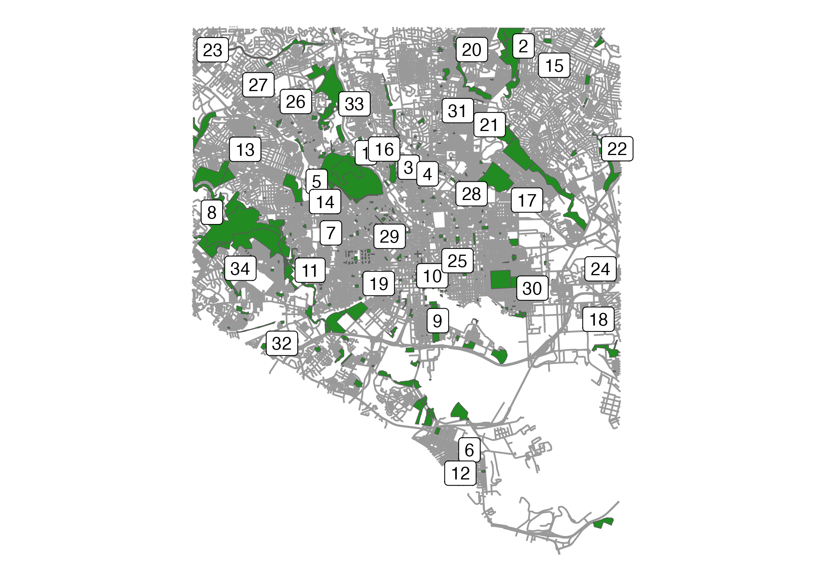

Show the code
# Make pretty table
lat_longs_pretty <- lat_longs %>%
select(Name = name,
Address = addr)
datatable(lat_longs_pretty)Election season is upon us already, and I was super pumped to participate in the new vote by mail program in Baltimore! If you haven’t heard about mail-in voting, check out more election-related info here. If you’ve already received your mail-in ballot, then you might know that you can return your ballot by mail (just drop it in any USPS box), or if you’d like to save the City a little money, you can return your ballot to any of the 34 drop boxes around Baltimore City. But where exactly are these boxes, you ask? The addresses are posted online, but as a newbie to this town, it wasn’t immediately obvious to me which one was the closest…so I made a map. I hope it helps make your voting experience a little easier too. Just be sure to sign your ballot and return it by May 14, 2024, at 8p (but sooner is even better!).

Note: this map was made using Eli Pousson’s mapbaltimore and maplayer R packages